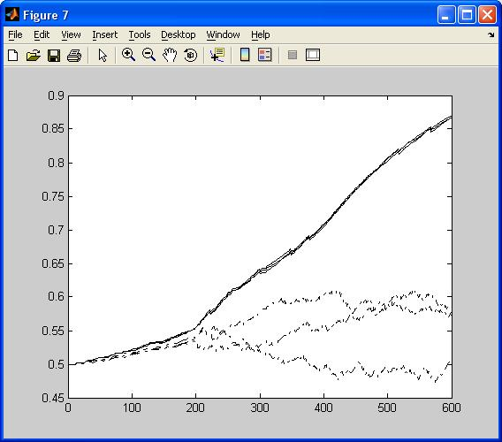

This is the readme for the code associated with the paper: Tamosiunaite M, Porr B, Worgotter F (2007) Self-influencing synaptic plasticity: Recurrent changes of synaptic weights can lead to specific functional properties. J Comput Neurosci 23:113-127 These model files were supplied by M. Tamosiunaite. See the comments in the main program 'one_cluster.m' for a additional documentation. To run type one_cluster at the matlab prompt. A couple of figures are created, one of which is similar to Fig 6. in the paper:  The program uses functions: 'histereze.m' - for hysteresis type saturation of weights; 'funh.m' - for mending small weight deviations out of [0,1] interval due to finite discretization; 'filtras100.m', 'filtras200.m', 'filtras250.m' - filters of signals. Using three different filter functions is because of mess in programing, and has to do only with signal length appropriate matching, while filter shape is determined by function parameters f and Q.